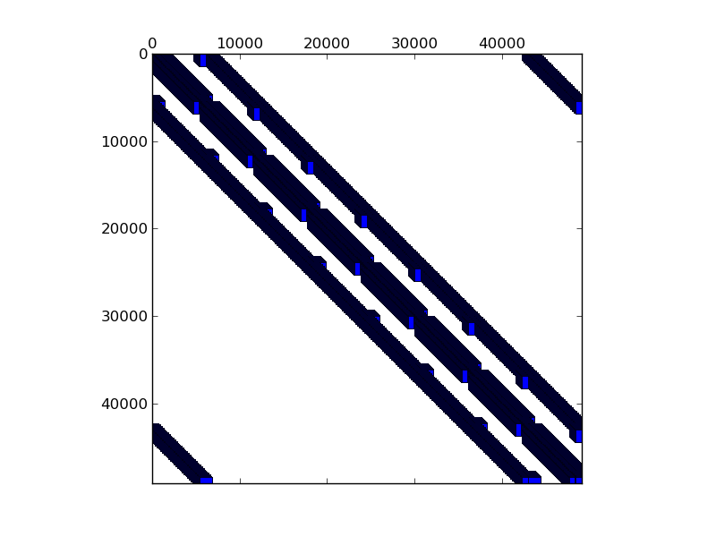

Matrix: conf5_4-8x8-05

Program arguments: ../build/test_spmv_sim ../fpga16-benchmark/fpga16/conf5_4-8x8-05.mtx File: ../fpga16-benchmark/fpga16/conf5_4-8x8-05.mtx Sorting took: took 0.167486 seconds. Param MatrixPath ../fpga16-benchmark/fpga16/conf5_4-8x8-05.mtx Running on DFE Result Simple Total cycles=261120,261120, Result Simple Padding cycles=0,0, Result Simple Reduction cycles=98304,98304, Config ArchitectureId 8 Result Simple Input width =8, Result Simple Pipes =2, Result Simple Iterations=1, Result Simple Took (ms)=10.5841, Result Simple Est (ms)=0.0026112, Result Simple Gflops (est)=1.46824, Result Simple Gflops (actual)=0.000362228, Result Simple BWidth (est)=17.8814, Test passed! All tests passed!
Name, Order, Nonzeros, Unique Values, Sparsity, MC(2), MC(5), MC(8), MC(10) conf5_4-8x8-05 49154 1916928 663552 0.07934 0.00001 0.00010 0.00080 0.00321 0.02564